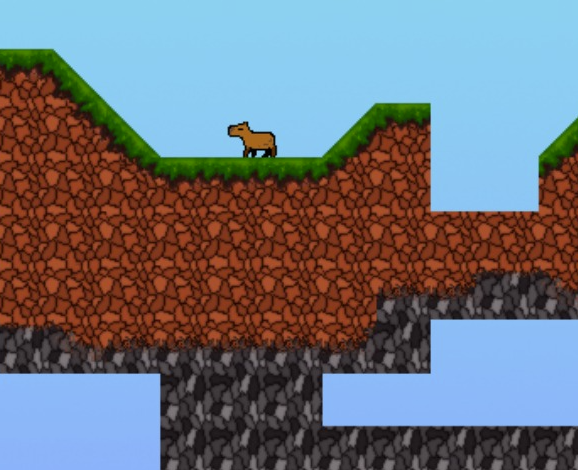
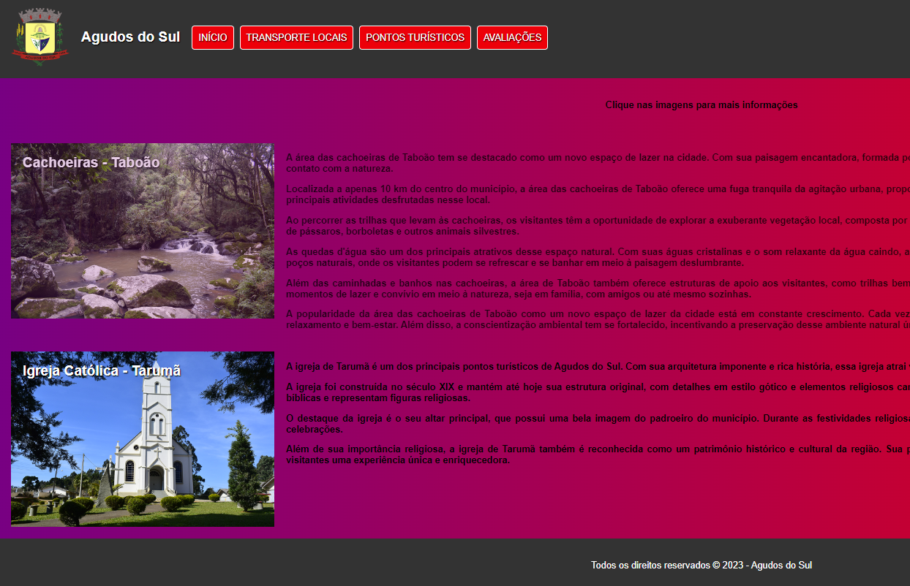
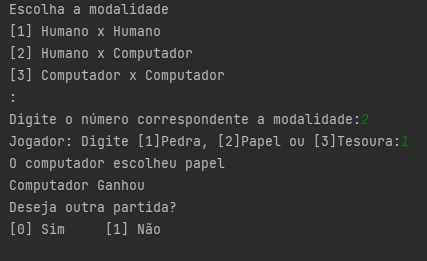
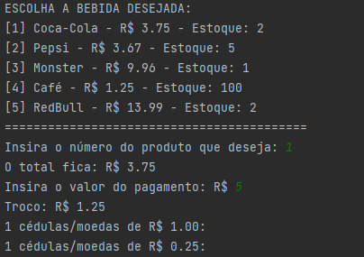

Bem-vindo ao meu portfólio! Sou Eduardo Pavin, estudante de Ciência da Computação na PUCPR. Neste espaço, compartilho meu trabalho e projetos realizados durante meu primeiro semestre. Explore meu portfólio e entre em contato para discutir oportunidades de parceria. Obrigado pela visita!

Jogo Capivara

Site Agudos do Sul

Pedra Papel Tesoura Python

Máquina de Vendas